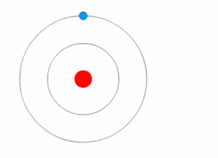

International science
Vibenshus Gymnasium
Et udpluk fra hverdagen
Atomer og lys
Atommodeller

En elektron skifter bane

Man kan regne på det
Rybergformlen:
\[\frac{1}{\lambda} = Z^2 R_{\infty} \left( \frac{1}{n_1^2}- \frac{1}{n_2^2} \right)\]

Atomer og molekyler har fingeraftryk
Det periodiske system
+ Emission og absorption

Det periodiske system med lys

Find dit grundstof
- Tag dit emissionsspektrum og studér det nøje.
- Gå rundt blandt bordene. Forsøg at finde netop dit grundstof.
- Tag de skøre briller på.
- Se på spektrallamperne igen. Vurdér igen, hvilket grundstof der er dit. Det kan godt snyde lidt!
Spektra i astronomi